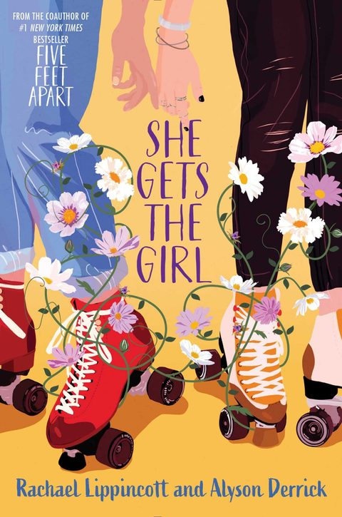

She Gets the Girl
Synopsis
Two college girls who seem like total opposites form an unexpected friendship that turns into something more.
The Last Night in the City
Summary of chapter 1
Alex, a bartender at a small music venue in Philadelphia, spends her last night in the city watching her girlfriend Natalie play a show with her band. In the morning Alex leaves for college in Pittsburgh, and Natalie’s band heads out on their first tour the following week.
Back at Natalie’s apartment, Natalie tells Alex she loves her. Alex nearly says it back, then freezes as painful memories of her father leaving and her troubled home life come rushing in. When a flirty text from a girl she once went on a date with lights up her phone, the night turns into an argument. Natalie says Alex never lets anyone close, and one cruel comparison later, Alex storms out.
Alone at the station in the middle of the night, Alex tries one old contact and finds she has no one to call. Scrolling through her phone, she realizes how many people she has kept at arm’s length, and that Natalie was right about her. As the train pulls out, she decides she has to change, and hopes the ride to Pittsburgh is long enough to work out how.